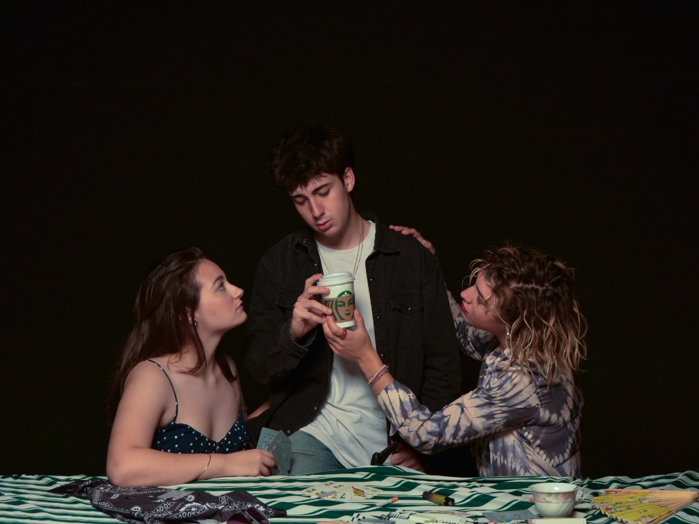
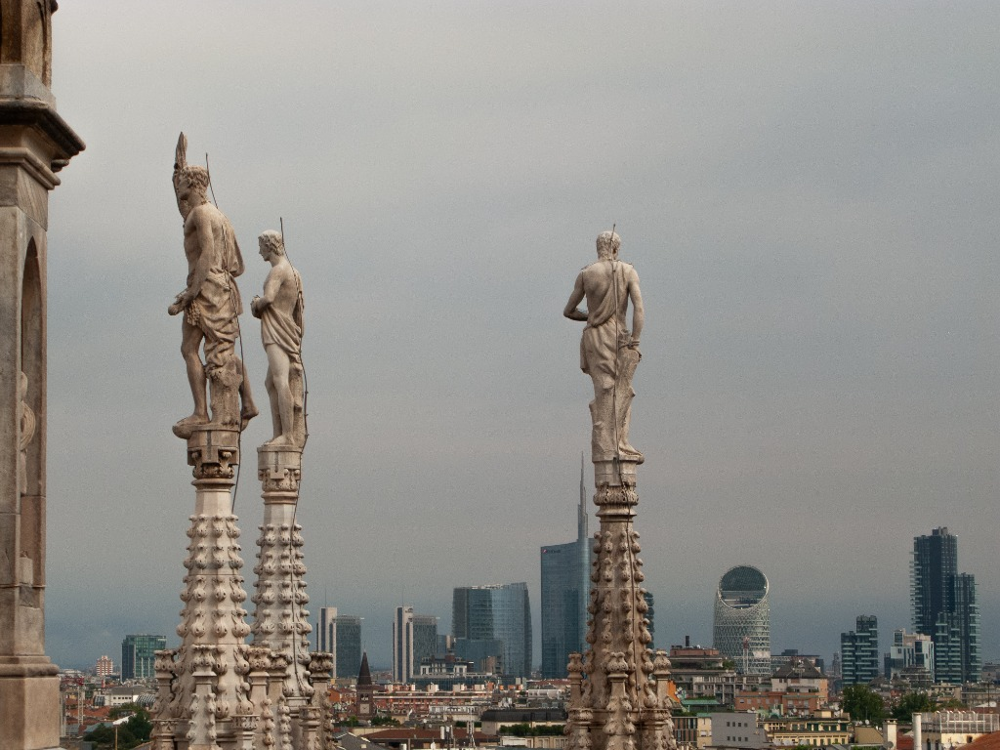
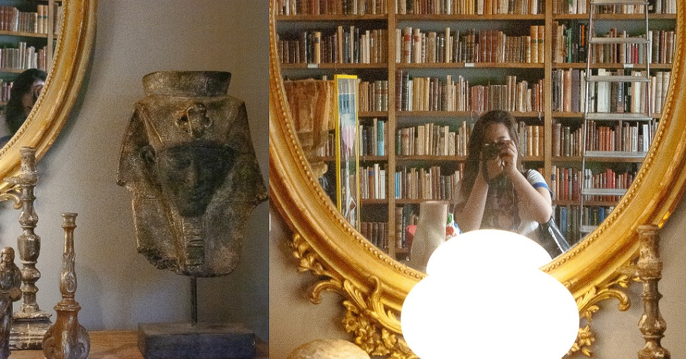

ABOUT
02 / 03
Estudiante de Comunicación Audiovisual.
Me interesan la dirección de arte, la fotografía, la edición y el fotoperiodismo.
DIRECCIÓN DE ARTE
FOTOGRAFÍA
EDICIÓN
FOTOPERIODISMO
CONTACT
03 / 03
EMAIL
yolanda0a0@gmail.com
INSTAGRAM
@yolanda0a0